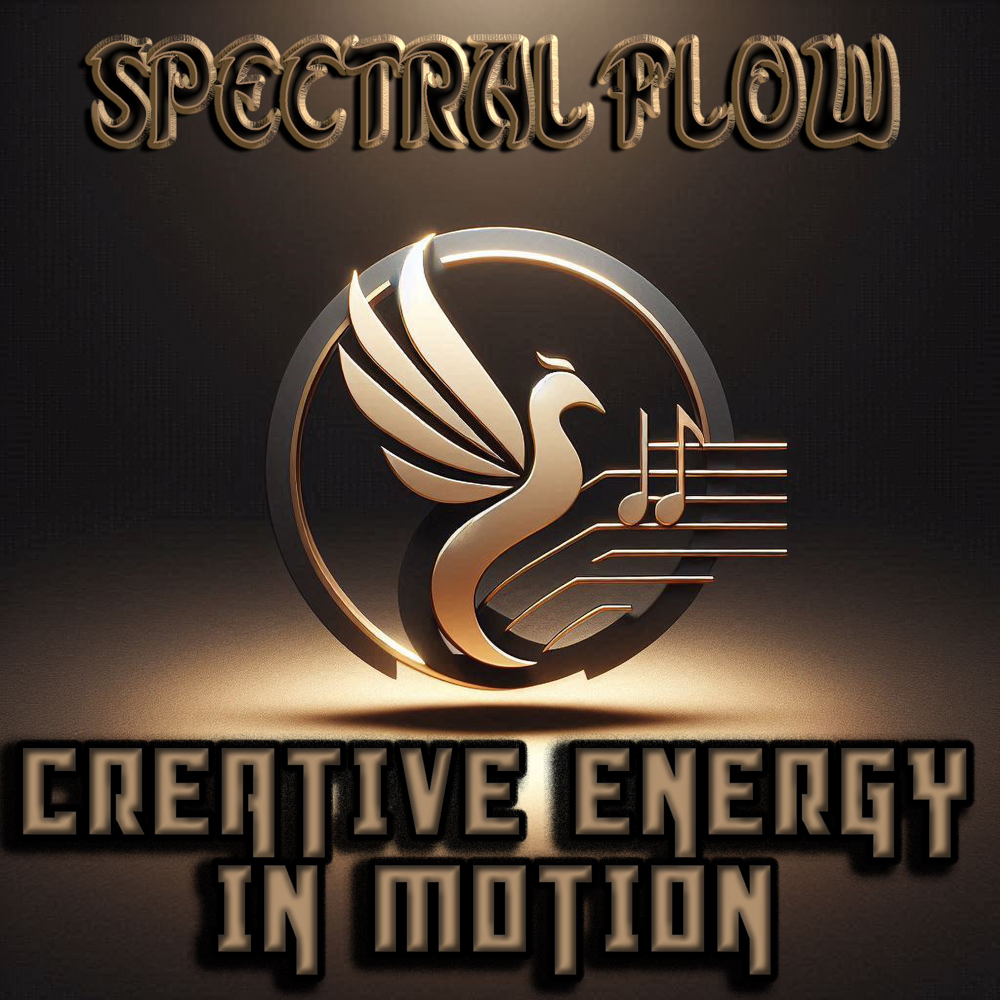
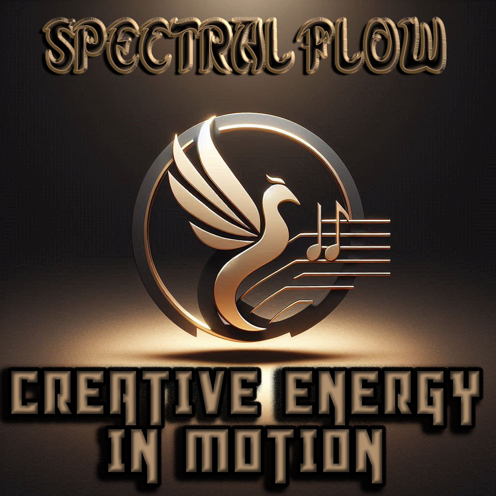

Spectral Flow
A Music Sanctuary for Healing Souls

 

About Richie
I’m Richard “Richie” Olejniczak—a man who fought through drug addiction and the justice system, serving two years of a six-year sentence. Since age 16, I’ve seen cycles of crime, betrayal, and the loss of friends to overdose. It’s been six years clean, and I’m never going back.
Music became my lifeline: a healing drum that carried me through the darkest days. I stand on a foundation of integrity, honor, and empathy—lifting others as I’ve been lifted.
Our Mission
At Spectral Flow, we believe every soul has its own melody. We blend sound and soul, using rhythm, AI-guided insight, and community to turn pain into power and chaos into creative flow.
- Express your truth through beats and soundscapes
- Heal with the pulse of community and technology
- Transform trauma into art and find belonging
Listen to Vesryin
📞 720-668-1208